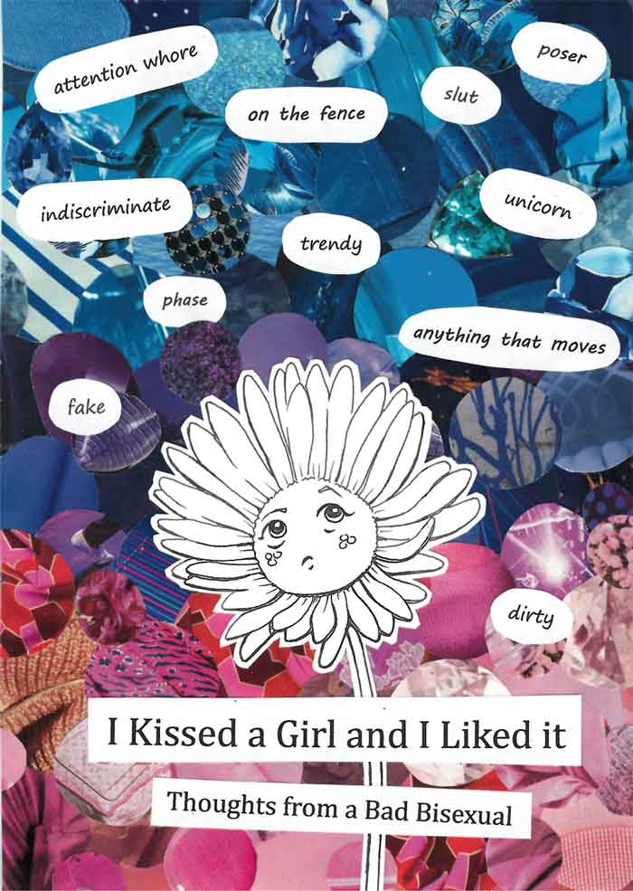
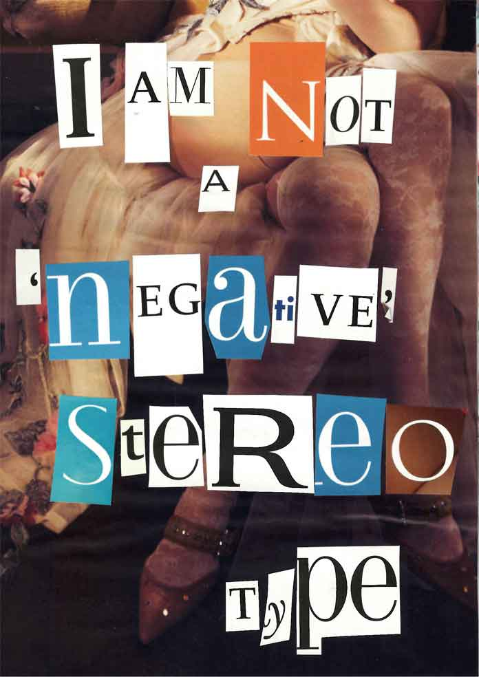
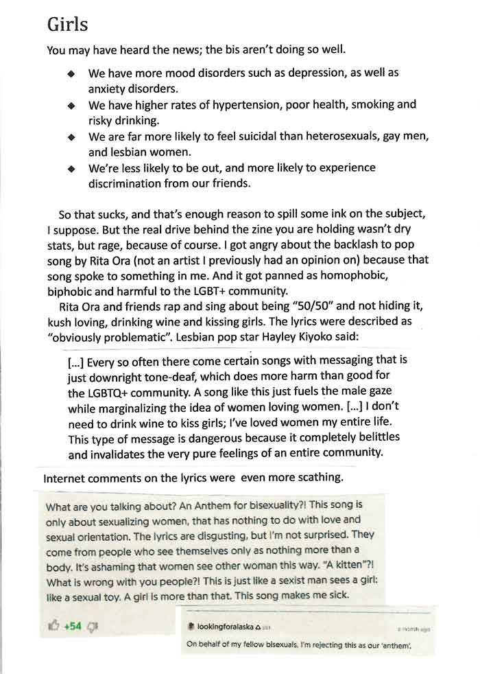
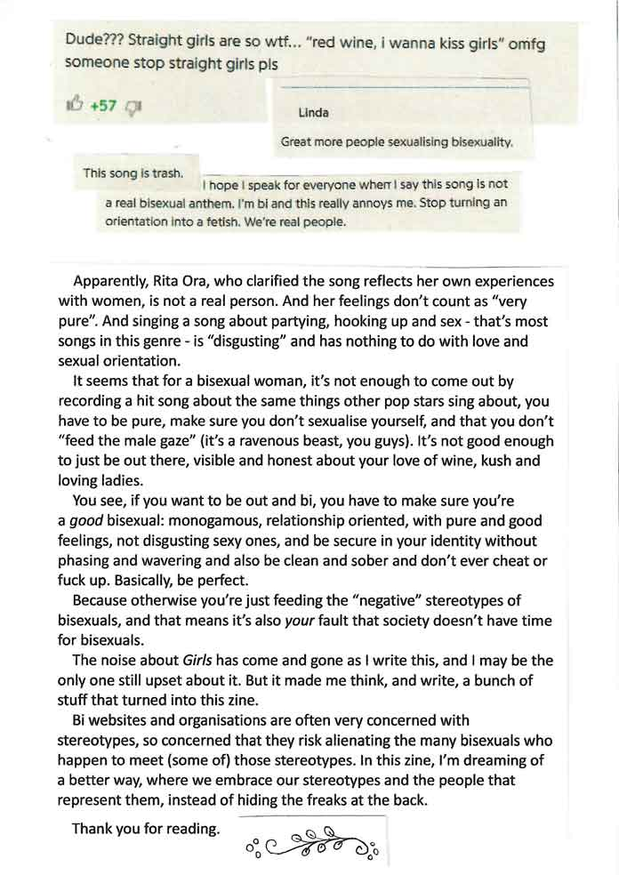
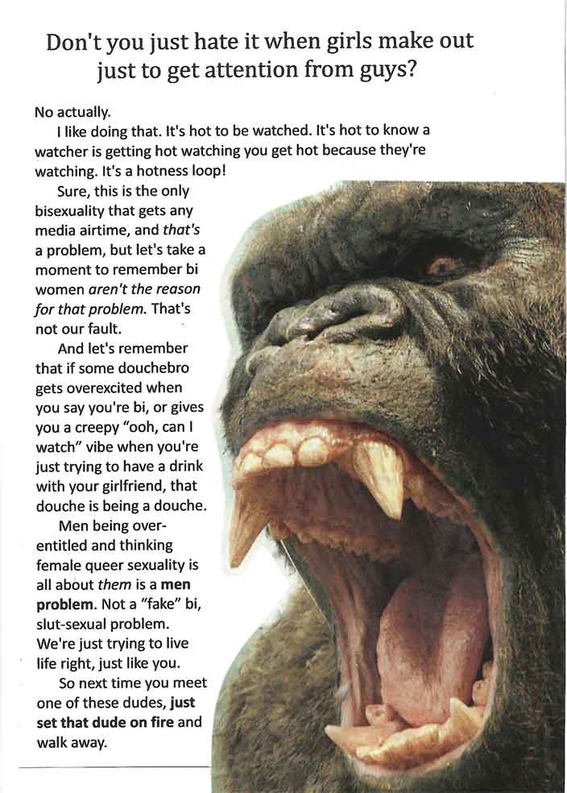
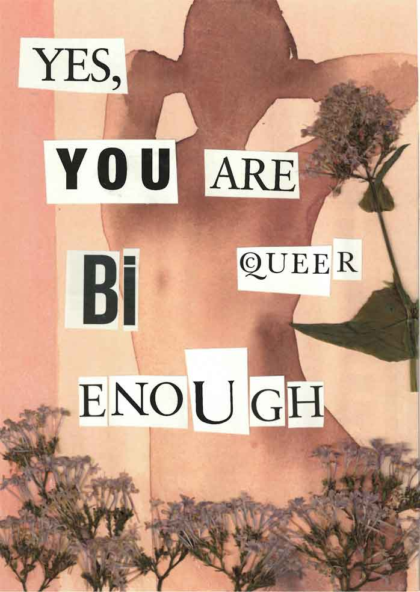

I Kissed a Girl and I Liked it
This is a zine I made in 2018 with drawings, writings and collage. If you like it, there's a print ready download available on my Buy me a Coffee, free of charge (you have an opportunity to tip, and I think it will ask for your email but you're not signing up to anything). There's also a poster.
Over the next few days, I'll add the wording as text below the pages for if you're struggling with small lettering or using a screen reader.
Back to front page.

I Kissed a Girl and I liked it: Thoughts from a Bad Bisexual.
In the background: "Attention whore" | "on the fence" | "slut" | "poser" | "indiscriminate" | "trendy" | "unicorn" | "phase" | "anything that moves" | "fake" | "dirty"

I am not a "negative" stereotype.

Girls
You may have heard the news; the bis aren't doing so well.
- We have more mood disorders such as depression, as well as anxiety disorders.
- We have higher rates of hypertension, poor health, smoking and risky drinking.
- We are far more likely to feel suicidal than heterosexuals, gay men, and lesbian women.
- We're less likely to be out, and more likely to experience discrimination from our friends.
So that sucks, and that's enough reason to spill some ink on the subject, I suppose. But the real drive behind the zine you're holding wasn't dry stats, but rage, because of course. I got angry about the backlash to [a] pop song by Rita Ora (not an artist I previously had an opinion on) because that song spoke to something in me. And it got apnned as homophobic, biphobic and harmful to the LGBT+ community.
Rita Ora and friends rap and sing about being "50/50" and not hiding it, kush loving, drinking wine and kissing girls. The lyrics were described as "obviously problematic". Lesbian pop star Hayley Kiyoko said:
[...] Every so often there come certain songs with messaging that is just downright tone-deaf, which does more harm than good for the LGBTQ+ community. A song like this just fuels the male gaze while marginalizing the idea of women loving women. [...] I don't need to drink wine to kiss girls; I've loved women my entire life. This type of message is dangerous because it completely belittles and invalidates the very pure feelings of an entire community.
Internet comments on the lyrics were even more scathing.
What are you talking about? An Anthem for bisexuality?! This song is only about sexualizing women, that has nothing to do with love and sexual orientation. The lyrics are disgusting, but I'm not surprised. They come from people who see themselves only as nothing more than a body. It's ashaming that women see other women this way. "A kitten"?! What is wrong with you people?! This is just like a sexist man sees a girl like a sexual toy. A girl is more than that. This song makes me sick.
54 upvotes
On behalf of my fellow bisexuals, I'm rejecting this as our "anthem".
Editor's note: you can still read all about this 8 year old controversy by searching for the lyrics to Rita Ora - Girls.

Great more people sexualising bisexuality.

Doing it for the attention.

Yes, you are bi/queer enough. This page is available as a printable poster, link to the Buy me a Coffee above.